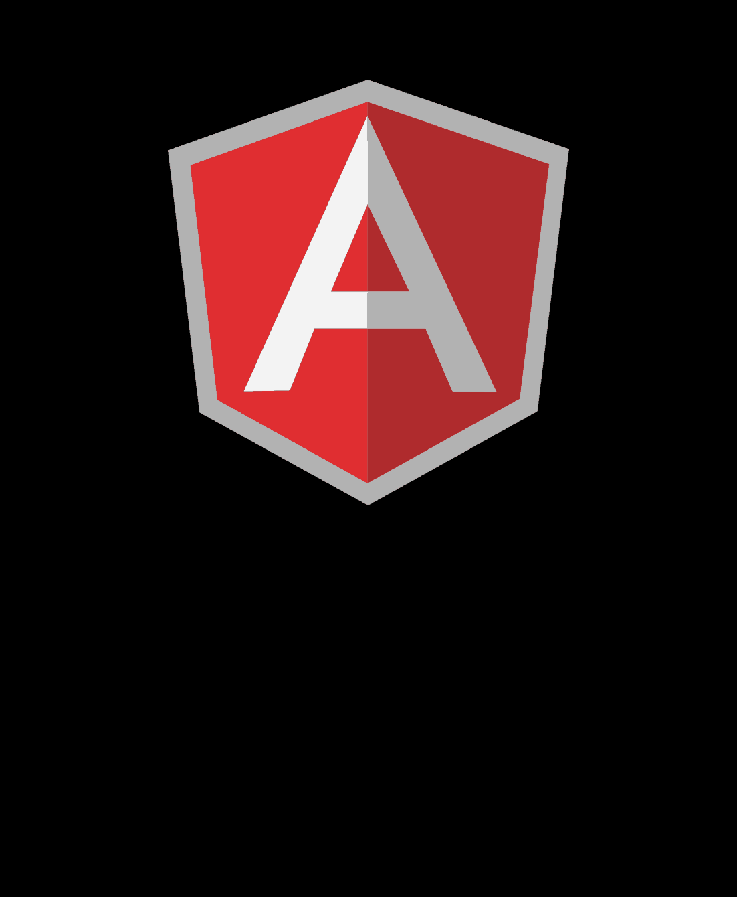
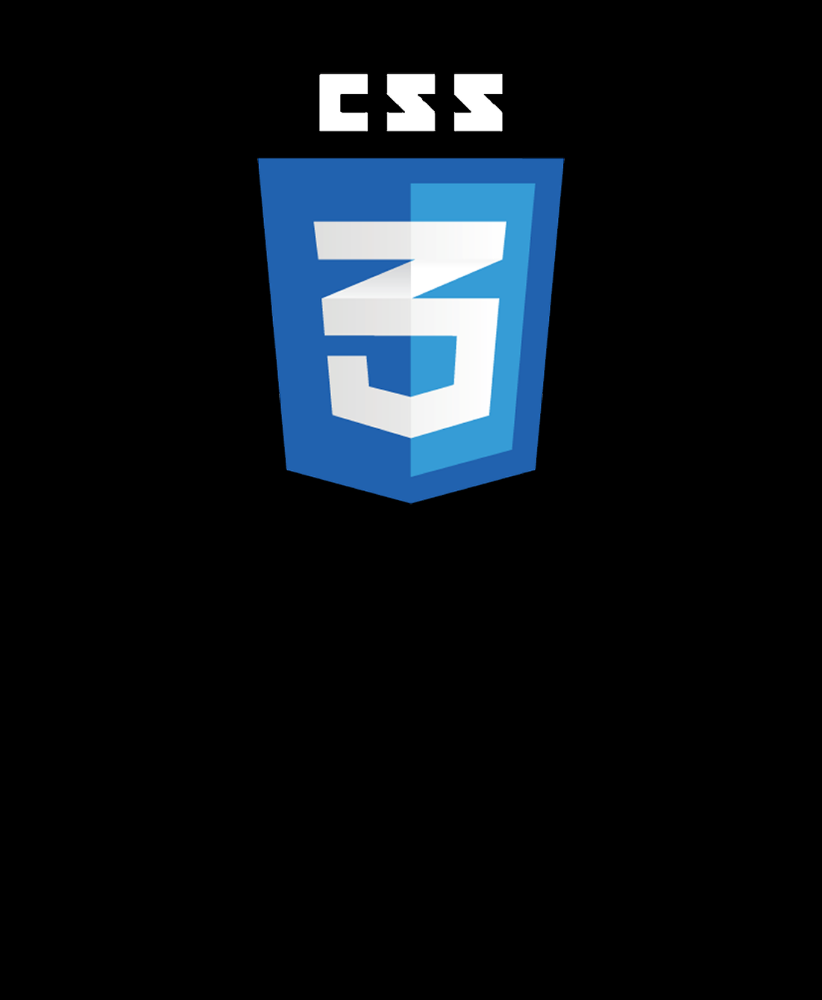
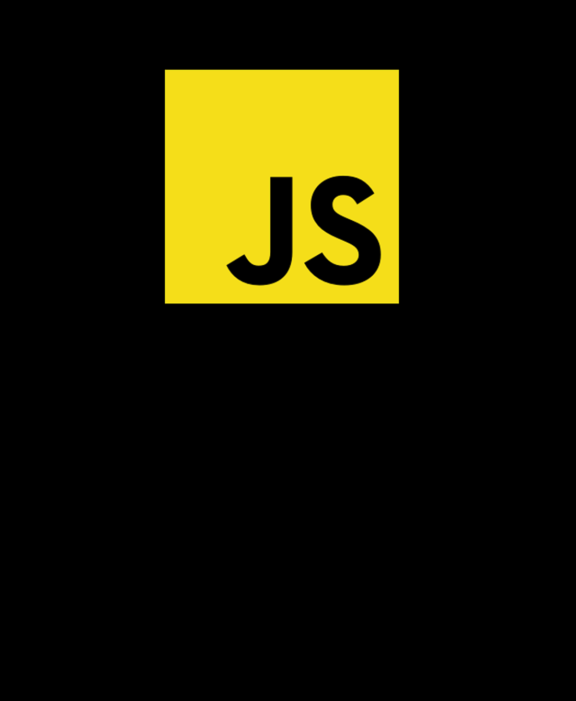
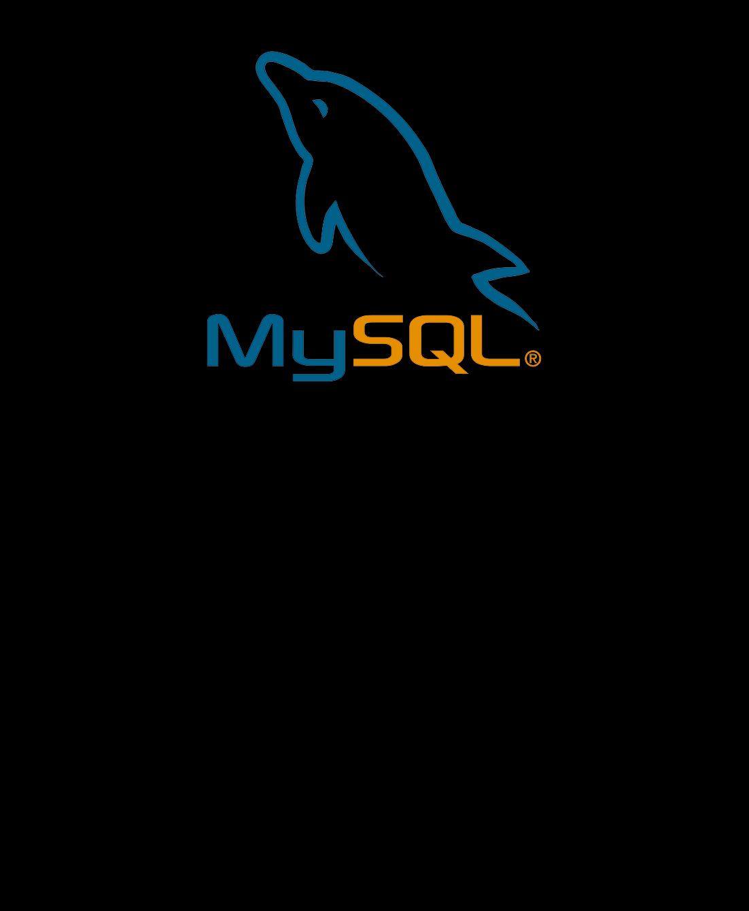
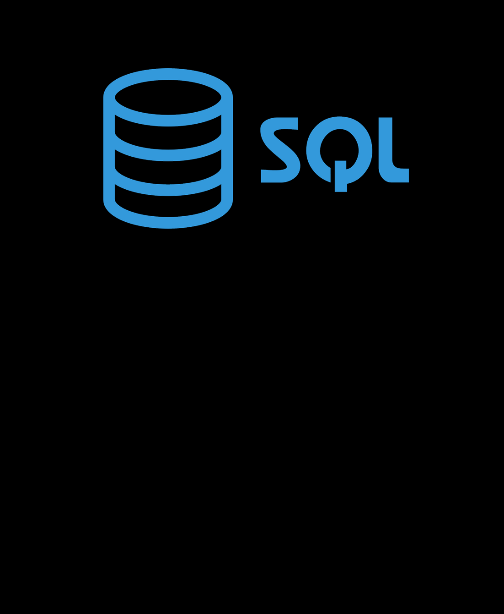
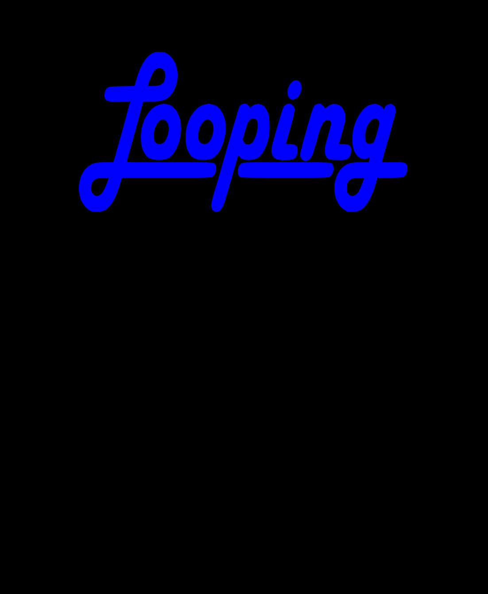
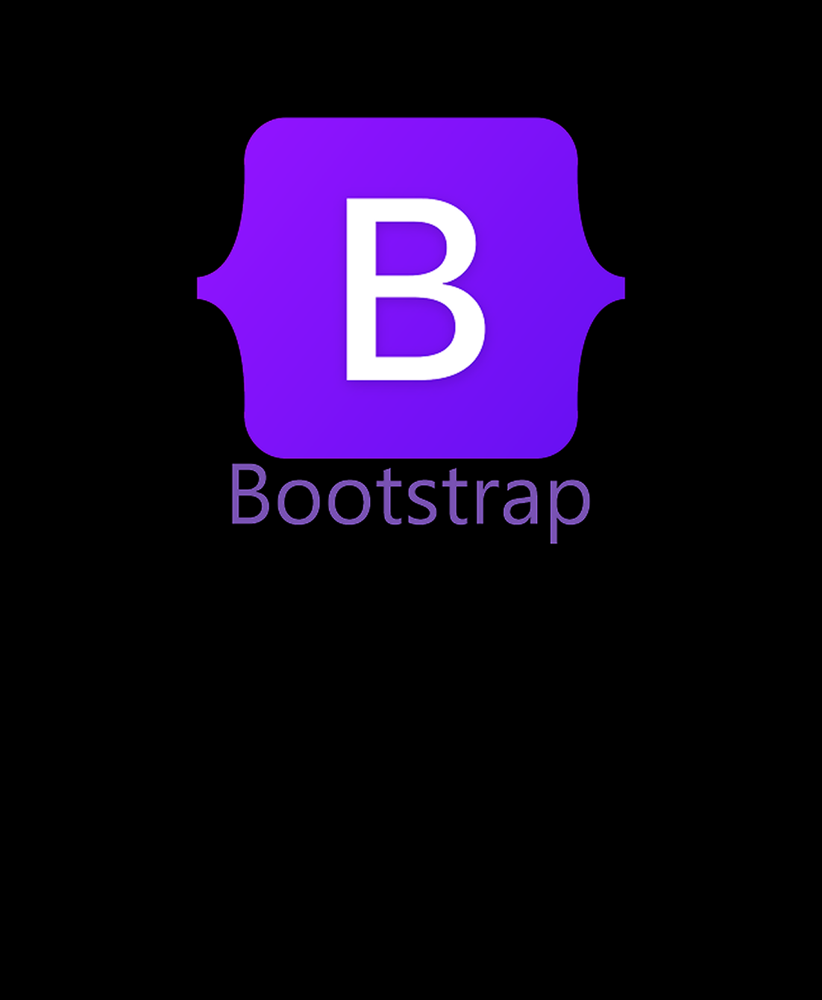
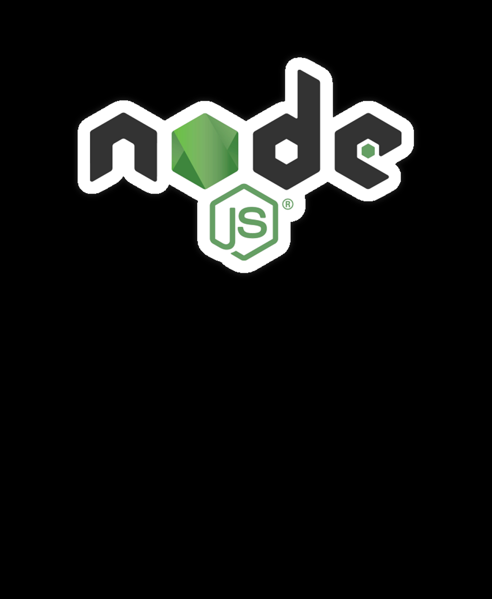
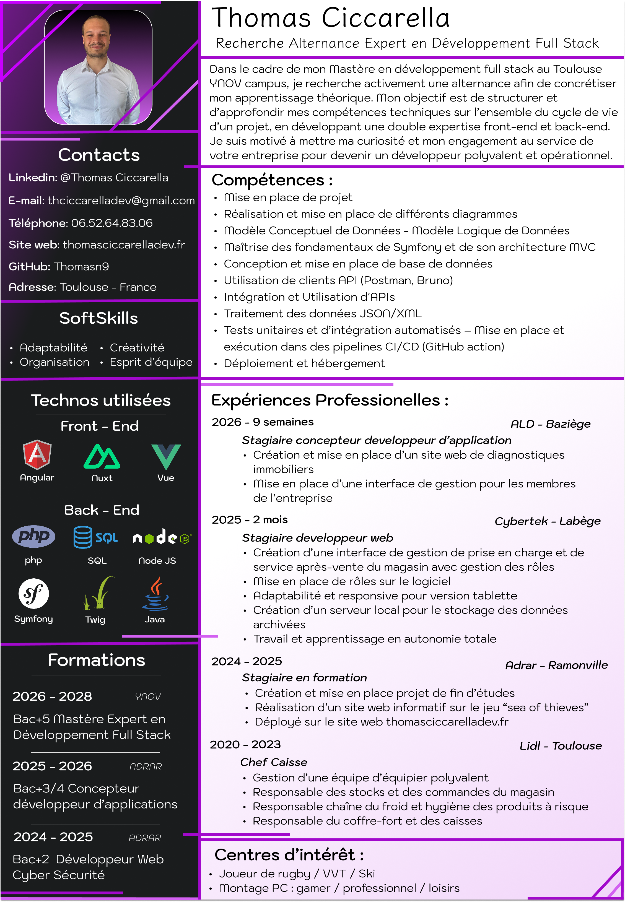

Vue.js pour développer des applications web modernes avec composants réactifs, gestion d'état et routage.
Nuxt.js pour créer des applications Vue.js performantes avec rendu côté serveur, génération de sites statiques et routage automatique. Je maîtrise la structure de projet, les layouts et les composables de Nuxt 4.

Angular pour développer des applications web d'entreprise complètes et scalables. Je maîtrise les composants, services, modules et le système d'injection de dépendances.
PHP pour développer des fonctionnalités côté serveur, comme la gestion des utilisateurs, l'envoi de-mails ou le traitement de formulaires. C'est un langage puissant qui me permet de créer des sites web dynamiques et personnalisés.
Symfony 7 pour créer des applications backend performantes avec architecture MVC, Doctrine ORM et services modulaires.
HTML pour structurer le contenu d'une page web, définir les titres, paragraphes, liens et autres éléments essentiels. C'est la base indispensable qui donne du sens et une hiérarchie à l'information affichée.

CSS pour styliser et mettre en forme les pages HTML, en contrôlant les couleurs, polices, espacements et dispositions. Cela me permet de créer des designs modernes, responsives et esthétiques pour une meilleure expérience utilisateur.

JavaScript pour rendre les pages web interactives, dynamiques et réactives aux actions de l'utilisateur. Grâce à lui, je peux animer des éléments, valider des formulaires ou même charger du contenu sans recharger la page.

J'utilise MySQL comme système de gestion de bases de données relationnelles pour stocker et organiser des informations de façon sécurisée et performante. Son intégration avec PHP me permet de créer des applications web dynamiques exploitant des données en temps réel.

SQL pour interagir avec les bases de données en effectuant des requêtes précises (sélection, insertion, modification, suppression). Ce langage me permet de structurer et manipuler des données de manière logique et optimisée.

J'utilise Looping pour concevoir des MCD - MLD selon la méthode Merise, en définissant les entités, associations et cardinalités. Cela me permet de visualiser clairement la structure des données avant leur implémentation technique.
MAMP pour créer un environnement de développement local complet avec serveur Apache, base de données MySQL et interpréteur PHP préconfigurés. Cela me permet de tester et développer mes projets web en toute autonomie, sans dépendre d'un hébergement en ligne.

Bootstrap pour développer des interfaces web responsive et modernes rapidement.Les composants pré-stylés, les utilitaires et la personnalisation via Sass pour créer des designs cohérents sur tous les appareils.
Jenkins pour mettre en place des pipelines CI/CD automatisés, de l'intégration continue au déploiement.

Node.js pour développer des applications serveur performantes en JavaScript. Je maîtrise la création d'APIs REST, la gestion des modules avec npm, et l'utilisation de frameworks comme Express pour construire des backend scalables.
